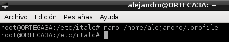
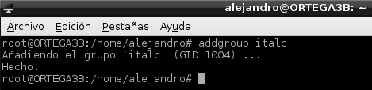
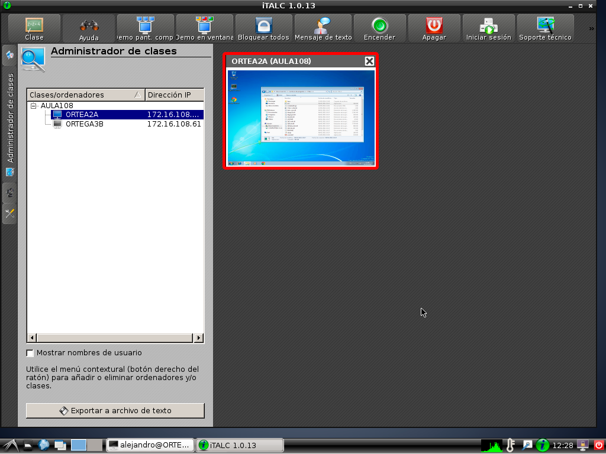
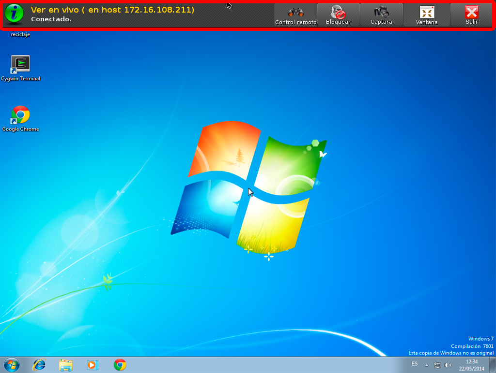
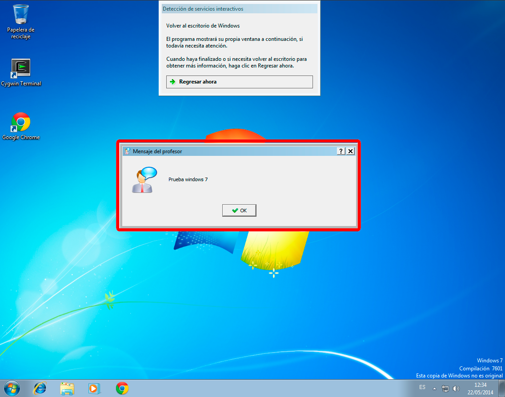

- Módulo: Fundamentos de Hardware
- Título del trabajo: A2: Control Remoto
- Componentes del grupo: Alejandro Ortega Freire
- Curso Académico: 2013/2014
- Fecha de entrega: 20 de mayo de 2014
1.- Preparación
- Consultar la documentación ofrecida por el profesor.
- Vamos a necesitar 3 máquinas virtuales:
- MV1 italc Master con SO Debian 7 que tendrá dirección IP 172.16.108.11 y nombre ORTEGA3A.
- MV2 italc Slave con SO Windows 7 que tendrá dirección IP 172.16.108.211 y nombre ORTEGA2A.
- MV3 italc Slave con SO Debian 7 que tendrá dirección IP 172.16.108.61 y nombre ORTEGA3B.
NOTA 1: se recomienda usar GNU/Linux Debian en MV1 y MV3. Se pueden usar otros SO. En tal caso, hablarlo antes con el profesor.
NOTA 2: poner IP's estáticas a las MV's.
 Principio del punto 1 |
Principio del punto 1 |  Fin del punto 2 |
Fin del punto 2 |  Índice
Índice
2.- iTalc Master
- Instalar iTalc Master (Maestro) en la MV1 (ORTEGA3A) con sistema operativo Debian 7.
- Para su instalación se empleó el gestor de descarga Synaptic como se muestra en las siguientes imágenes.
Imágenes 1 y 2: Instalación de iTalc Master a través de Synaptic.
- En GNU/Linux la instalación de italc-master crea los siguientes ficheros:
- /etc/italc/keys/private/teacher/key (Este es el fichero de clave privada del master)
- /etc/italc/keys/public/teacher/key (Este es el fichero de clave pública del master)
- Si las claves anteriores no existieran después de instalar el programa habrá que generarlas. Para crear las claves de iTalc ejecutamos el comando:
Imagen 3: Creación de las claves de iTalc.
- Creamos el grupo italc, y añadimos nuestro usuario "alejandro" al grupo:
- addgroup italc
- usermod alejandro --groups italc
Imagen 4: Creación del grupo italc al que añadimos el usuario alejandro.
- Damos permisos al grupo italc, para tener acceso a las claves de italc:
- cd /etc/italc; chgrp -R italc keys
Imagen 5: Modificar permisos.
- Verificar que el servicio está iniciado con el comando ps -ef |grep ica. Si el programa "ica" no está iniciado, lo podemos iniciar manualmente. Para ello abrimos un terminal y escribimos: /usr/bin/ica &
Imagen 6: Comprobar que el servicio ica está iniciado.
Imagen 7: Iniciar manualmente el servicio ica.
- Para que el servicio ica se inicie automáticamente al iniciar sesión con el usuario "alejandro":
- Editar fichero /home/alejandro/.profile
- Añadir "/usr/bin/ica &" al final del fichero.

Imágenes 8 y 9: Modificar el fichero /home/alejandro/.profile.
- Otra forma de crear el inicio automático usando el gestor gdm para ello (Consultar).
Principio del punto 2 | Fin del punto 3 | Índice
3.- Slaves (Esclavos)
- Vamos a instalar iTalc Slave (Esclavo), para monitorizar dos equipos distintos.
3.1- Cliente Windows (MV2 - ORTEGA2A)
- Instalar italc en Windows (Consultar)
- Asegurarse de que nuestro usuario de Windows tiene una clave NO vacía.
- Tratar de instalar una versión de Italc cliente "similar" a la del master.
NOTA 3: ¿Cómo podemos consultar la versión de italc en el Master? Vamos al equipo master y hacemos:
- Ir a Synaptic y consultar la versión en el nombre del paquete.
- Por comandos, ejecutando "dpkg -l italc*". Esto nos muestra los paquetes instaldos y su versión cuando el nombre comienza por italc.
- Por comandos, ejecutando "ica -v", nos muestra la versión del programa (ica es el programa que da el servicio de iTalc).

Imagen 10: Comprobar versión de iTalc.
Imagen 11: Bajar el instalador para Windows.
Imágenes 12-16: Instalar iTalc cliente en Windows.
- Una vez instalado iTalc en Windows es necesario copiar el fichero de clave pública del maestro (MV1) e importarlo en el cliente Windows (MV2). Para ello hay dos formas:
- Reiniciar el programa.
3.2- Cliente GNU/Linux (MV3 - ORTEGA3B)
- Instalar en GNU/Linux Debian (apt-get install italc-client).
Imagen 23: Instalar iTalc cliente.
- Copiar el fichero key del master directamente en /etc/italc/keys/public/teacher.
Imágenes 24-25: Copiar clave pública del maestro en el cliente Debian.
- Creamos el grupo italc, y añadimos nuestro usuario "alejandro" al grupo:
- addgroup italc
- usermod alejandro --groups italc

Imágenes 26-27: Creación del grupo italc al que añadimos el usuario alejandro.
- Damos permisos al grupo italc, para tener acceso a las claves de italc:
- cd /etc/italc; chgrp -R italc keys
Imagen 28: Modificar permisos.
- Verificar que el servicio está iniciado con el comando ps -ef |grep ica. Si el programa "ica" no está iniciado, lo podemos iniciar manualmente. Para ello abrimos un terminal y escribimos: /usr/bin/ica &
Imagen 29: Comprobar si "ica" está iniciado e iniciar manualmente.
- Para que el servicio ica se inicie automáticamente al iniciar sesión con el usuario "alejandro":
- Editar fichero /home/alejandro/.profile
- Añadir "/usr/bin/ica &" al final del fichero.
Imagen 30: Modificar el fichero /home/alejandro/.profile.
Principio del punto 3 | Fin del punto 4 | Índice
4.- Comprobación desde el master (maestro)
- Ahora desde el Master debemos poder monitorizar/controlar los Slaves.
- Iniciar el programa gráfico de control, para comprobar que está todo correctamente instalado.
NOTA 4: Para iniciar el programa en el maestro:
- Primero buscar el icono en los menús del entorno gráfico.
- Si no aparece el icono en Debian, usar el comando italc.
- Si no aparece el icono en Ubuntu, usar el comando italc-launcher.
- Iniciar iTalc.
- Crear una clase (AULA108) donde añadiremos los equipos a monitorizar.
Imágenes 30-31: Crear AULA108.
- Añadir equipo cliente con Debian (MV3 - ORTEGA3B) al AULA108.
Imágenes 32-34: Añadir cliente Debian.
Imágenes 35: Prueba de monitorización en vivo del cliente Debian.
- Mandar un mensaje a la máquina cliente Debian.

Imágenes 36-37: Mensaje al cliente Debian.
- Añadir equipo cliente con Windows (MV2 - ORTEGA2A) al AULA108.
NOTA 5: Para visualizar correctamente el cliente con Windows 7 en el Maestro es necesario, previamente, detener el servicio icas (iTalC Client) a través del "Administrador de tareas de Windows" e iniciar manualmente la aplicación ica.exe situada en C:\Archivos de programas\italc. De no hacer esto el maestro y el esclavo se conectan pero en pantalla no se visualiza la máquina cliente, quedando el monitor en negro.
Imágenes 38: Detener el servicio icas (iTalC Client).
Imágenes 39: Iniciar iTalC manualmente.

Imágenes 40-41: Añadir cliente Windows.

Imágenes 42: Prueba de monitorización en vivo del cliente Windows.
- Mandar un mensaje a la máquina cliente Windows.

Imágenes 43-44: Mensaje al cliente Windows.
Principio del punto 4 | Índice
Alejandro Ortega Freire 1ºASIR
Fundamentos de Hardware